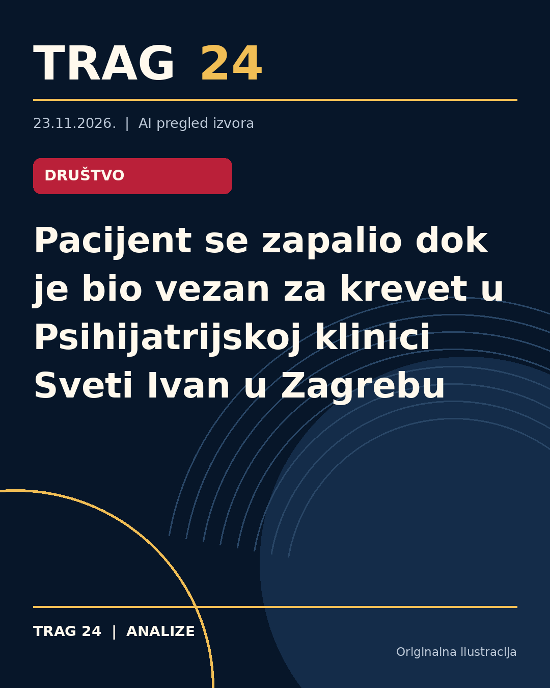

Pacijent se zapalio dok je bio vezan za krevet u Psihijatrijskoj klinici Sveti Ivan u Zagrebu

ŠTA SE DOGODILO
Sredinom septembra u Psihijatrijskoj klinici Sveti Ivan u zagrebačkom naselju Jankomir, pacijent koji je bio vezan sigurnosnim pojasevima za krevet zapalio se. Prema nezvaničnim informacijama, pacijent je došao do upaljača i zapalio kaiševe kojima je bio fiksiran, verovatno u pokušaju da se oslobodi. Požar se proširio na njegovu levu ruku, nogu i deo kreveta. Incident je otkriven tek nakon aktiviranja protivpožarnog sistema, a pacijent je sa opekotinama prebačen u Kliniku za traumatologiju, gde je proveo dva dana.
HRONOLOGIJA
Incident se desio u jutarnjim satima sredinom septembra. Požar je primetio protivpožarni sistem i aktivirao prskalice, nakon čega je medicinsko osoblje intervenisalo. Policija je izvršila uviđaj i zaplenila snimke video-nadzora, zatim je slučaj bio deo istrage zbog sumnje na izazivanje požara i oštećenje tuđe imovine. O događaju nije bilo zvanične informacije Ministarstvu zdravlja niti zdravstvenoj inspekciji sve do nedavnih provera nakon smrti pacijenta Kristijana Josipa Periša, čiji slučaj je izazvao široke nadzore i istrage unutar iste ustanove.
ŠTA NAVODE IZVORI
Izvor "Jutarnjeg lista", na koji se pozivaju oba izvora, navodi da je pacijent bio "humano vezan" i da su upaljač i mogućnost video-nadzora detaljno proveravani od strane policije. Ministarstvo zdravlja i dalje nije bilo informisano o ovom incidentu, a ministarka Irena Hrstić izrazila je iznenađenje što joj slučaj nije bio prezentovan ni na sednici Upravnog odbora bolnice ili tokom nedavne posete klinici. Ministarstvo je zatražilo hitan sastanak sa gradskim vlastima Zagreba zbog pitanja nadzora i odgovornosti za rad ustanove.
ŠTA JE POTVRĐENO
Potvrđeno je da se incident dogodio u Psihijatrijskoj klinici Sveti Ivan i da je pacijent zadobio opekotine kojim se lečio u Klinici za traumatologiju. Takođe je potvrđeno da Ministarstvo zdravlja i zdravstvena inspekcija nisu bile obaveštene o incidentu u vreme njegovog nastanka. Policija je obavila uviđaj i sprovela istragu, a slučaj je ponovo aktuelan u nadležnim organima.
ŠTA NIJE POTVRĐENO
Nije potvrđeno koji su tačni razlozi zbog kojih je pacijent imao pristup upaljaču i nije poznato da li je soba zaista bila pod video-nadzor u momentu incidenta niti ko je i koliko pratio događaje. Takođe nema zvaničnih informacija o tome ko je bio zadužen za nadzor pacijenta u momentu događaja i da li je neko primetio zapaljenje promena pre nego što je požar aktiviran sistemom za dojavu.
ŠTA OSTАJE OTVORENO: Ostaje nejasno kako je moguće da se ovakav ozbiljan incident, s obzirom na težinu, nije našao na dnevnom redu nadzora nad zdravstvenom ustanovom i zašto Ministarstvo zdravlja nije blagovremeno bilo informisano. Takođe se otvorenim pitanja čine odgovornosti nadležnih u ustanovi i gradu Zagrebu, kao i potpunost video-nadzora i mera zaštite pacijenata tokom hospitalizacije u psihijatrijskim uslovima.
Izvori
- https://www.blic.rs/vesti/svet/novi-horor-u-zagrebackoj-bolnici-u-kojoj-je-stradao-peris-pacijent-zapalio-sam-sebe/lykf80p
- https://mondo.rs/Info/EX-YU/a2315693/zapalio-se-pacijent-vezan-za-krevet-u-klinici-sveti-ivan-u-jankomiru.html
Ova analiza je pripremljena uz pomoć veštačke inteligencije na osnovu javno dostupnih izvora. Navodi izvora nisu nužno nezavisno potvrđeni.